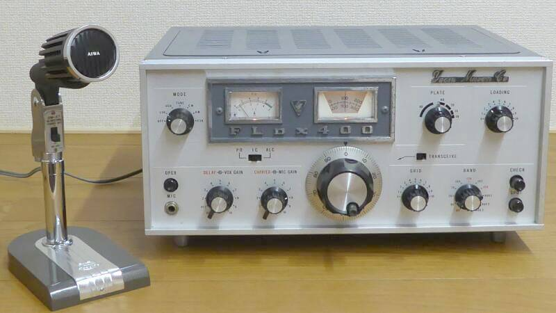
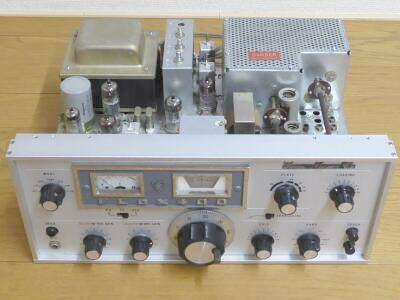
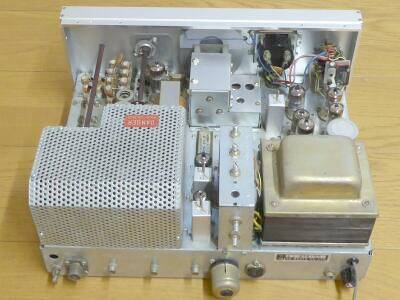
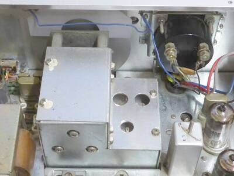
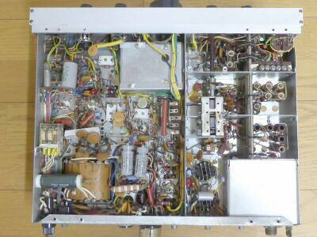

ＡＭを脱した後、６９年から７２年頃まで、親のすねをかじって一番熱を入れてアマチュア無線を楽しんでいた頃に、お世話になった送信機です
ＤＸのカントリ稼ぎも、多くがこの時期の２１ＭＨｚＳＳＢでした
当時としてはまだ珍しい、フルサイズの５エレ八木（ブーム長１１ｍ／ブームは鉄パイプ！）を使っていました |

ＦＲＤＸ４００／ＳＰ-４００と、セットで使用していました
当時はまだ、ＹＤ-８４４ スタンドマイクの登場はなく、ＡＩＷＡ ＤＭ-４８を使っていました
写真に写っているスタンドマイクは、当時のYAESU 規格QSLにもあった、DM-４７です
この頃では、海外でもＹＡＥＳＵブランドは、一般化していました
ＴＲＩＯ／ＫＥＮＷＯＯＤは、まだそこまでの知名度はなく、言わばＹＡＳＥＵ全盛の時代です |
|
時代的背景などは、ＦＲＤＸ４００のページに記します
今回入手したモデルは、最終モデル・・・ＶＦＯダイヤル・スケールが１回転１００ＫＨｚ、ダイヤルそのものはバーニア機構により１／６に減速され、おおよそ１６ＫＨｚ／１回転というものです（ＦＴ-１０１などと同じ）
|
 |
ケースを取り外してフロント面から見たところ |
 |
ケースを外して、リア面から見たところ
この写真では分かりませんが、前オーナーの手でＡＮＴ切り替えリレーが大型のものに交換されていました（ファイナル・シールドの中） |
 |
今回入手したＦＬＤＸ４００を開けてみて一番驚いたこと・・・実は、このＶＦＯ、私が愛用していた当時（初期モデル：メインダイヤル５０ＫＨｚ／１回転）のＶＦＯは、先代のＦＬ１００／２００Ｂ同様に、真空管１２ＡＵ７が採用されていました
ご察知のとおり、その安定度には問題があり、ＦＲＤＸ４００のＶＦＯに依存したトランシーブ操作でしか実用になりませんでした
どのタイミングで、ＦＲＤＸ４００同等のＦＥＴ／ＴＲ式のＶＦＯの採用になったのかは知りません
ＹＡＥＳＵホームページから取扱説明書をダウンロードして回路図を見たところ、回路はこのＦＥＴ／ＴＲ採用のものになっていましたが、その下には、ＶＦＯ Ｖ１１ １２ＡＵ７との記載が残っていました |
 |
シャーシ下の様子 |
|
|
ツマミ・レバーの錆などを除き、全体的には年代の割には綺麗なものでした（私が持っていたら、こうはならないくらい綺麗！）
動作させてみると、パワーが出ない・・・・ファイナル・アイドリングは流れています
メータのＡＬＣ表示が全く触れていません・・・・ あれ！？本来、フル・スケールになるはず・・・・
Ｖ３ ＩＦ管６ＢＡ６ ソケットとの接触不良で、ヒーターが点火していませんでした！
あとは、お決まりの調整でスペック通りの動きとなりました（真空管の大きな劣化も無いようでした）
ＶＦＯも、１２ＡＵ７採用の当時のものとは比較にならないくらい安定です
ＳＳＢ送信音は、当時のＹＡＥＳＵトーン…ローカット気味の固めの音色です
ＤＲＩＶＥ・ＬＯＡＤ各ＶＣの引っ掛かり…特定の位置でゴロゴロした感じがする動きは、ＶＣベアリング部にグリスを塗布することでスムーズになりました |
|
|
ＶＦＯに、バンドごとに補正トリマの用意があります
ＦＲＤＸ４００とのトランシーブの場合、ＦＲＤＸ４００側のローカル・オシレータのｆ調整（もちろんフロント・パネルにツマミあり）で、送受周波数を合わせるようになっていました（当時は）
すなわち、バンド切り替えごとに鳴き合わせが必要でした
今回の様子から、ＶＦＯの半導体化のタイミングで、送信機単独で周波数の補正ができるようにしたものと思われます（バンド切り替えごとの鳴き合わせを不要に）
|
|